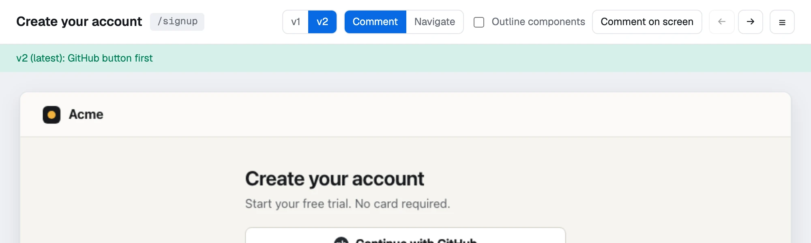
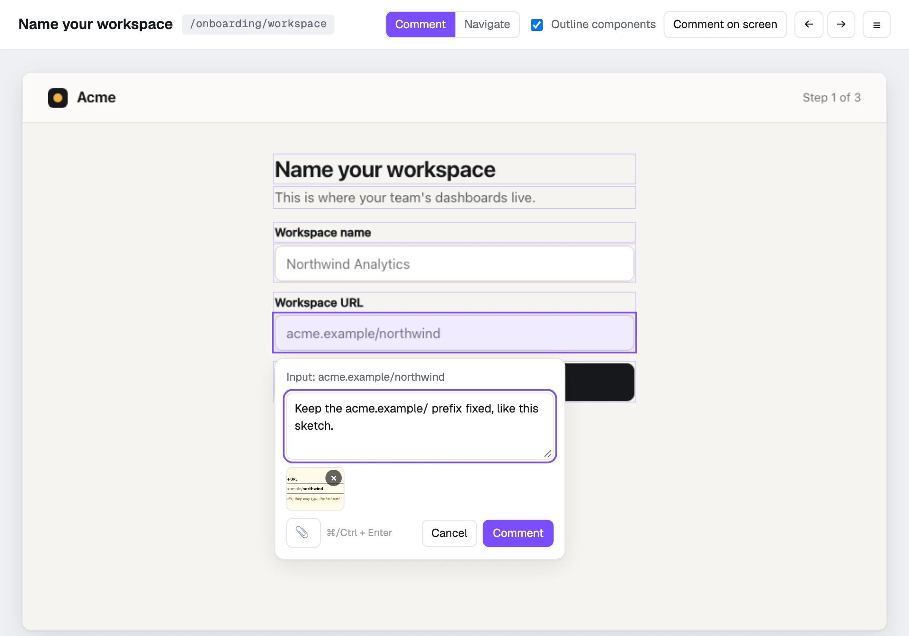
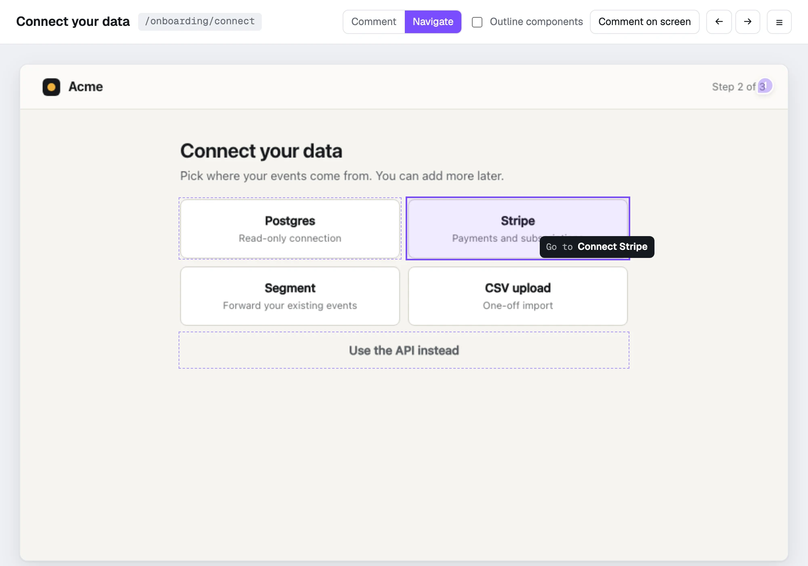
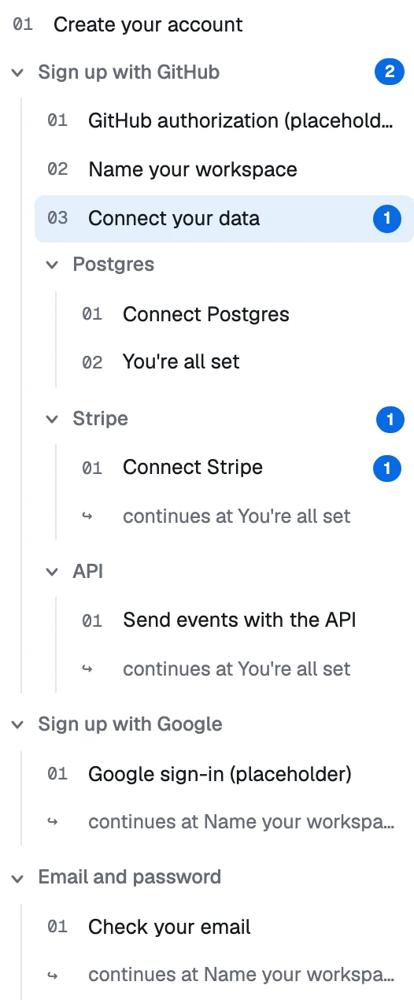
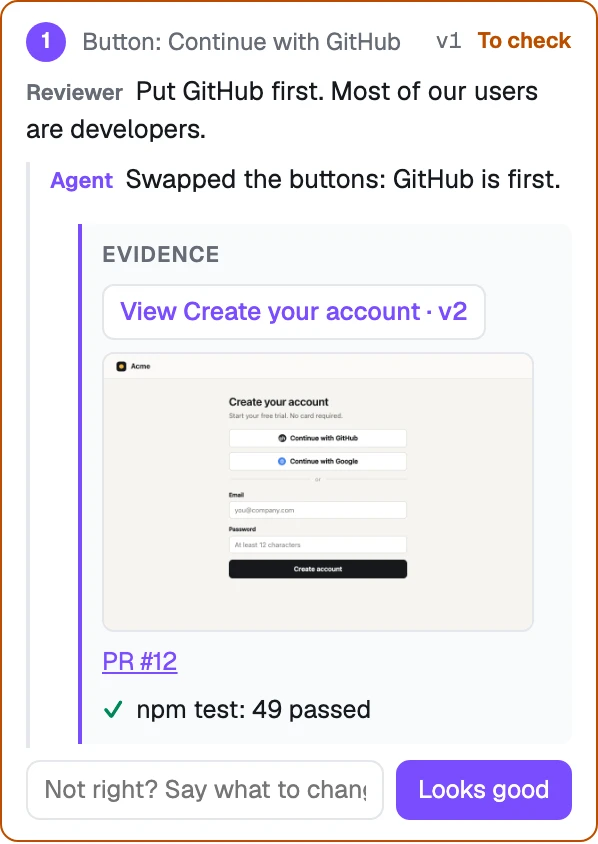
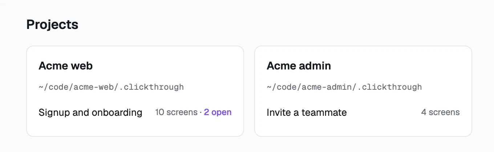

A version for every capture
Each time the agent captures a screen again it becomes a new version with a note on what changed. The page you have open moves to it on its own, and the earlier versions stay one click away.
Clickthrough is a local review page for product flows. Your agent captures every screen of signup, onboarding or checkout, with every branch. You click through them like the real app and comment on any component. The agent changes the code, captures the screen again and shows its proof.
$ npm install -g github:S4M3R/clickthrough
Open source, MIT. Needs Node 18 or newer. No dependencies, no account, nothing leaves your machine.
It drives your app with its browser tool, screenshots each screen and records where every button, field and heading is. Each choice a user can make becomes a branch.
Run clickthrough. Walk the branch tree, click any component and write what should change.
clickthrough watch runs in the background and prints each new comment as one line. The agent finds the code behind that component and changes it.
The screen you are looking at switches to the new version. The thread turns Done, with the version, screenshots, links and the checks the agent ran.
One global install, then clickthrough from anywhere opens the review page in your browser.
To look around first, clone the repo and run npm start. It serves a demo flow.
$ npm install -g github:S4M3R/clickthrough
or, without installing
$ npx github:S4M3R/clickthrough
You do not capture screens by hand. Give your coding agent this prompt in your project and it does the rest.
AGENTS.md is written for the agent: how to capture a screen and its components, how to wire the branches, and how to work through your comments.
It works with Claude Code, Codex, Cursor, T3 Code, or any agent that can run a shell command and drive a browser.
Read https://github.com/S4M3R/clickthrough/blob/main/AGENTS.md, then capture our signup and onboarding flow with every branch, start the review server and watch for my comments.
The review page has two modes. Switch here the way you do in the tool: press C or N.
Comment on the component, not the screenshot. Every button, field and heading is a click target, so your comment arrives as “Button: Continue with GitHub”, not “somewhere top left”. Paste, drop or attach images to show what you mean. The agent gets them as files it can open.

Click through the screens like the real app. Components that lead somewhere get a dashed outline. Click “Stripe” and you are on the Stripe screen of that branch. The arrow keys move along the flow.

A flow is a graph. “Sign up with GitHub” and “Email and password” are separate branches, and so is each integration a user can connect.
Where branches meet again, the tree says “continues at…” instead of repeating the screens. Open comments are counted on each screen and on the branch that holds it.
The agent adds one edge per real choice, labeled in the user's words:
$ clickthrough edge onboarding signup github \
--label "Sign up with GitHub" \
--via "Continue with GitHub"
$ clickthrough edge onboarding connect stripe \
--label "Stripe" --via "Stripe"
When the agent finishes a comment it does not just say so. The thread gets a Done badge and what the agent attached: the screen version that shows the change (one click to view), screenshots, a link to the PR or the deploy, and the checks it ran.
Not right yet? Reply. The thread reopens and your reply reaches the agent like a new comment.
$ clickthrough done onboarding c_1a2b3c \
"Swapped the buttons: GitHub is first." \
--version signup --image after.png \
--link https://github.com/acme/web/pull/12 \
--label "PR #12" \
--check "npm test: 49 passed"

Each time the agent captures a screen again it becomes a new version with a note on what changed. The page you have open moves to it on its own, and the earlier versions stay one click away.

Each project keeps its flows in its own .clickthrough/ folder. clickthrough lists them together, and every screen has a URL you can bookmark: /p/project/flow/screen.
Flows are JSON and images inside your project. The server listens on 127.0.0.1 only. There is no account and no cloud, and the package has zero runtime dependencies.
Add .clickthrough/ to your .gitignore if the screenshots should stay out of the repo.
$ npm install -g github:S4M3R/clickthrough
Found a bug or want something changed? Open an issue.